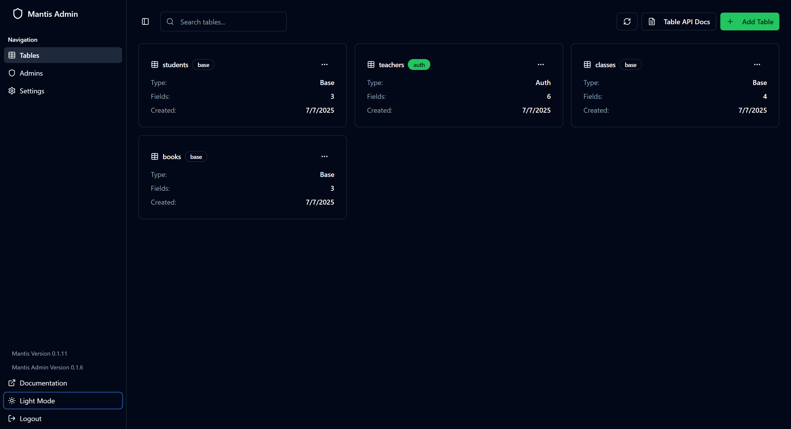

|
Mantis App v0.2.5
|
|
Mantis App v0.2.5
|

A lightweight, pluggable Backend-as-a-Service (BaaS) library built in C++
Portable. Embeddable. Syncable. Built for speed and extensibility.
Mantis is a modular, lightweight C++ library designed to power modern backend systems in embedded devices, desktop tools, or standalone server deployments. Inspired by systems like PocketBase and Supabase, Mantis focuses on:
NOTE: On windows, we use
mingwnotMSVCdue to some feature incompatibility. Formingw, it requires at leastv13with support forstd::format.
By default, the http server is served on port 7070.
You can also embed Mantis as a library in your own C++ project:
Check mantis/examples for a sample
Mantis ships with a lightweight admin dashboard available on <host>:<ip>/admin and restricted to admin login only. By default, in your setup, you need to create a admin user account using the CLI command:
With the admin account created, we can then use it to log in to the admin dashboard. The dashboard allows for easy management of:
By default, admin auth tokens expire after an hour, but it's configurable in the settings tab of the dashboard.
 ___admin dashboard snapshot___
Contributions are welcome! Please see CONTRIBUTING.md and open an issue or PR.